A Tutorial on Graph-Based SLAM
はじめに
不確実性の下での地図の作成はSLAM問題と呼ばれる。この文献では、この問題に対するさまざまな用可能である解決案がある。これらのアプローチは、フィルタリングまたは平滑化のいずれかに分類できる。フィルタリングアプローチは、システムの状態が現在のロボットの位置と地図で構成されるオンライン状態推定として問題をモデル化する。新しい測定値が利用可能になったときにそれを組み込むことによって、地図の拡張および改良を行う。有名な手法としてはカルマン情報フィルタ、パーティクルフィルタ等がある。これらは主にオンラインSLAMメソッドと呼ばれる。対して、平滑化アプローチは、測定した情報セットからロボットの完全な軌道を推定する。これらの手法は最小二乗問題として扱われる。SLAM問題に対処する直感的な方法は、いわゆるグラフベースによる定式化であろう。ロボットの姿勢やランドマークを頂点、それらを関係づけるセンサデータを辺としたグラフの解決により、SLAM問題を解くことが出来る。しかし、観測は常にノイズの影響を受けるため、このような制約が矛盾する可能性がある。このようなグラフが作成されると、測定値と最大限に一致するノードの構成を見つけることが重要な問題となる。これは、誤差最小化問題となる。
グラフベースSLAMは1997年にLuとMiliosらによって提案された。当時は複雑な計算が必要であったため流行らなかったが、現在では有力なアプローチとなっている。このチュートリアルの目的は、SOTA(state-of-the-art)なグラフベースのSLAMの理解へ読者を導くことである。このチュートリアルを理解するには、線形代数、多変量最小化、および確率論に関する十分な知識が必要である。
SLAMの確率論的定式化
m: 地図
 : ロボットの軌道
: ロボットの軌道
 : オドメトリ
: オドメトリ
 : 環境情報
: 環境情報
: ロボットの軌道: オドメトリ: 環境情報上記の変数の定義の上で完全SLAM問題は以下のように定義されます。

式01 完全SLAMの定式化
この「○○の仮定」という表現はSLAMの全てのデータは「推定したデータに過ぎない」という思想の元の表現であると思われる。が、知識不足の可能性の方が高いので、今後「マルコフの仮定」等の単語も調べる必要があるかもしれない。

図01 動的ベイズネットワーク
グラフベースSLAMの説明の多くは省かせて頂いた。その多くがSLAM入門と類似しており、これを読んでいるあなたはもう既に理解している事柄であるためである。えっ？まだ見ていないって・・・？
関連研究
ここに関連研究を挙げる。このチュートリアルではグラフベースSLAMに焦点を当てているので、そのようなアプローチを検討する。-
Lu, Milions
方程式全体を最適化することで誤差を減らし、地図を洗礼する手法を最初に提案した。 -
Gutmann, Konolige
増分推定アルゴリズムを実行しながらループ閉じ込みを検出する手法を提案した。これ以降、様々なネットワーク最適化の手法が提案された。 -
Howardetら
「relaxation」を適応してロボット位置を特定する。 -
Freseら
「multi-level Relaxation(MLR)」と呼ばれるGauss-Seidel relaxationを提案した。それは異なる解像度でのrelaxationを適用している。 -
Dellaert, Kaess
オフラインSLAMへの適応のために疎行列因数分解を用いた。 -
Kaesset ら
疎な因数分解を計算するために部分的な並び替えを利用したオンラインSLAM「ediSAM」を発表。 -
Konoligeet ら
線形化されたシステムを効率的に構築するためのポーズグラフ法のオープンソースで提案した。 -
Olson ら
確率的勾配降下法に基づいた効率的な最適化手法を提案。 -
Grisetti
Olsonのアプローチを拡張し、2Dと3Dのノードを木構造で扱うアプローチを提案した。 このようにして収束速度を向上させている。 -
GraphSLAM
最適化問題の次元を減らすために変数消去技術を用いている。 -
The ATLAS フレームワーク
2階層でグラフを構築し、最下層ではカルマン・フィルタを用い、第2レベルではローカルマップを整列させて大域最適化アプローチを行う。 -
Estrada ら
独立した小域地図を用いた「Hierarchical SLAM」を提案 -
Olson
フロントエンド部分でのスペクトルクラスタリングを用いた外れ値除去 -
N ̈uchter ら
3Dマッピングを統合的に行うSLAM -
Lu, Milios
Nuchterらの提案した3D SLAMの最適化
グラフベースSLAM
グラフベースSLAMでは生のセンサデータを抽象化した「仮想の測定値」で単純化された測定問題を構築します。何故なら、推定プロセスでデータを単純化せずに扱うと、組み合わせの複雑さが爆発的に増大することになる。そのため、ほとんどの実用的なアプローチでは、最も可能性の高いトポロジーに推定値を限定している。正しいデータ関連付けを計算するためには、フロントエンドではロボットの軌跡
 上の条件付き優先順位を一貫して推定する必要がある。ロボットが環境を探索する際には、フロントエンドとバックエンドの実行を連動させる必要があり、バックエンドの精度と効率性は、良いSLAMシステムを設計する上で非常に重要である。このチュートリアルでは、データ関連付け問題に対する高度なアプローチは説明しない。必要ならば、スペクトルクラスタリング、ジョイント互換性分岐とバインド、またはバックトラッキングを用いたアソシエーションに取り組もう。
上の条件付き優先順位を一貫して推定する必要がある。ロボットが環境を探索する際には、フロントエンドとバックエンドの実行を連動させる必要があり、バックエンドの精度と効率性は、良いSLAMシステムを設計する上で非常に重要である。このチュートリアルでは、データ関連付け問題に対する高度なアプローチは説明しない。必要ならば、スペクトルクラスタリング、ジョイント互換性分岐とバインド、またはバックトラッキングを用いたアソシエーションに取り組もう。観測値が正規分布に従ってノイズの影響を受けるとき、グラフベースマッピングアルゴリズムの目的はロボットの軌道の事後確率を求めることである。これは観測の尤度が最大になるようなグラフの構成を計算する問題だ。以下ではこの問題を制約最適化問題と呼び、以下に表記法を紹介する。
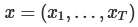は姿勢を示す行列であり、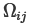及び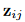はノードi, jを接続するための仮想の測定値の入った情報行列である。この仮想測定は、iから取得した観測値とjから取得した観測値が最大限に重なるように変換したものだ。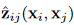はノード xi, xj が与えられたときの可能の測定値を示す。
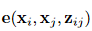は観測した ^z_ij と実際の z_ij との誤差を示す。表記を簡単にするために、測定値の指標を誤差関数の指標で表す。
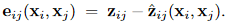
図2は、グラフのエッジを定義するための関数とその量を示したものである。 最尤法の目的は、すべての観測値の負の対数尤度 F(x) を最小にするノードx∗の構成を見つけることである。
式02 誤差関数
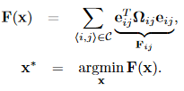
式03 目的関数F(x)

図02 グラフのエッジを定義するための関数とその量
xi と xj の接続を示す図。これらは計測値 zij に由来する。xi, xjから逆に計測値 ^zの計算も可能である。eij は誤差関数を示し、実際の測定値と期待した測定値との誤差を表す。エッジはその誤差関数とその不確かさを測定する情報行列 Ωij によって特徴づけられる。
反復的局所線形化による誤差最小化
ロボットの姿勢の初期推定値̆xがわかっていれば、一般的なガウス・ニュートン法またはLevenberg-Marquardtアルゴリズムを使用して、式03のx*の数値解を得ることができる。それには、現在の初期推定値̆xを中心とした一次テイラー展開によって誤差関数を近似することでできる。
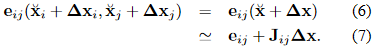
J_ijはe_ij(x)のヤコビ行列を示す。この(7)の式を式03のF(x)の式に代入すると
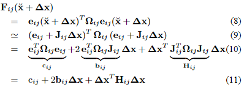
となる。そして局所近似により次のように書き換えることが出来る。
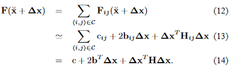
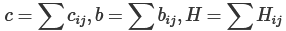とすることで(13) から (14) の変換を行っている。そしてΛxを最小化することで解くことが可能である。
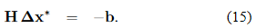
行列Hは測定誤差をヤコビ行列を通して軌道の空間に投影することが出来る。構造上、Hは疎な行列であり、制約によって接続されたポーズには0がない。非ゼロのブロック数は制約の数の２倍です。これにより式(15)をSparse Choleskyにより解くことが出来る。線形化された解は、計算された増分を初期推測に加えることで得られる。
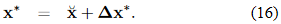
一般的なガウス・ニュートン法は(14)の線形化、(15)の解、(16)の更新の繰り返しである。各反復では前回の結果が用いられる。上記の手順は一般的なアプローチであり、パラメータxがユークリッドであることを前提としている。そのため、SLAMでは有効でない可能性もある。
この式(16)で求められた x* が上の式03内の観測値の負の対数尤度 F(x) を最小にするノードの構成である。
線形化されたシステムへの考察
式(14)から、行列Hとベクトルbは、制約ごとに1つずつの行列とベクトルを合計することで得られる。全ての制約条件はシステムに負荷項をもたらす。この加算による構造は誤差関数のヤコビ行列に依存する。制約の誤差関数は2つのノードの値にのみ依存するため、(7)のヤコビ行列は次のような形になる。
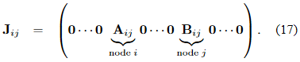
ここで、AijとBijは、xiとxjに対する誤差関数の微分である。式(10)から、ブロック行列Hijの構造は次のようになる。
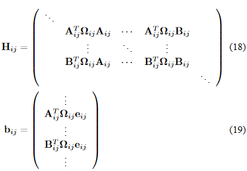
(見やすさの為に０は省略している。)アルゴリズム1は、ロボットの姿勢に関する事後情報の平均値と情報行列を決定する反復的なガウス・ニュートン法を要約したものである。システムのほとんどの構造は疎であるため、システムのヘッセ行列Hを保存するには、メモリ効率の良い表現を使用したほうが良い。ヘッセ行列の構造は、グラフの接続性から事前に知られているので、反復の最初に一度だけヘッセ行列を事前に割り当て、新たな線形化が必要なときに、すべてのエッジをループしてその場で更新したほうが良い。 各エッジは、ブロックH[ii]、H[ij]、H[ji]、H[jj]と、係数ベクトルのブロックb[i]およびb[j]に寄与する。さらに、Hの上三角部は対称的なので、上三角部のみを計算するという最適化も行われている。なお、制約条件 ij の誤差は、連結されたポーズ xi と xj の相対的な位置関係にのみ依存する．したがって、ポーズxの特定の構成の誤差F(x)は、すべてのポーズの剛体変換の下で不変である。この結果、式15は過小評価されることとなる。このシステムを数値的に解くためには、増分Δxkの1つをゼロに拘束するのが一般的である。これは、k番目の対角線ブロックH[kk]に恒等行列を加えることで可能である。
アルゴリズム1では、一般性を損なわないように、最初のノードex1を固定する。ポーズ・グラフの特定のノードを固定する別の方法は、式15の線形システムのk番目のブロックの行とk番目のブロックの列を抑制することである。
Algorithm 01：制約条件のグラフからロボットの姿勢の多変量正規近似の平均x∗と情報量H∗の計算
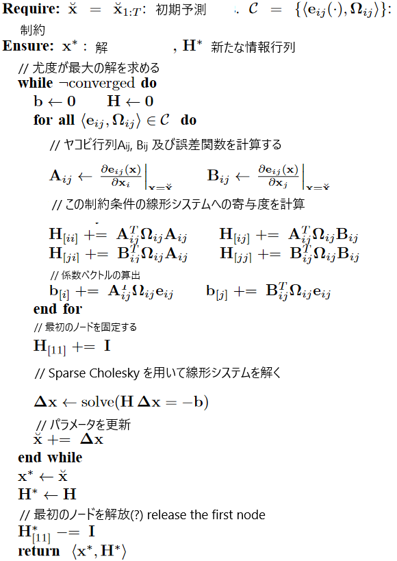